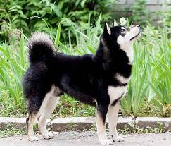
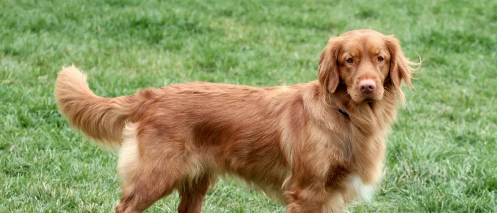
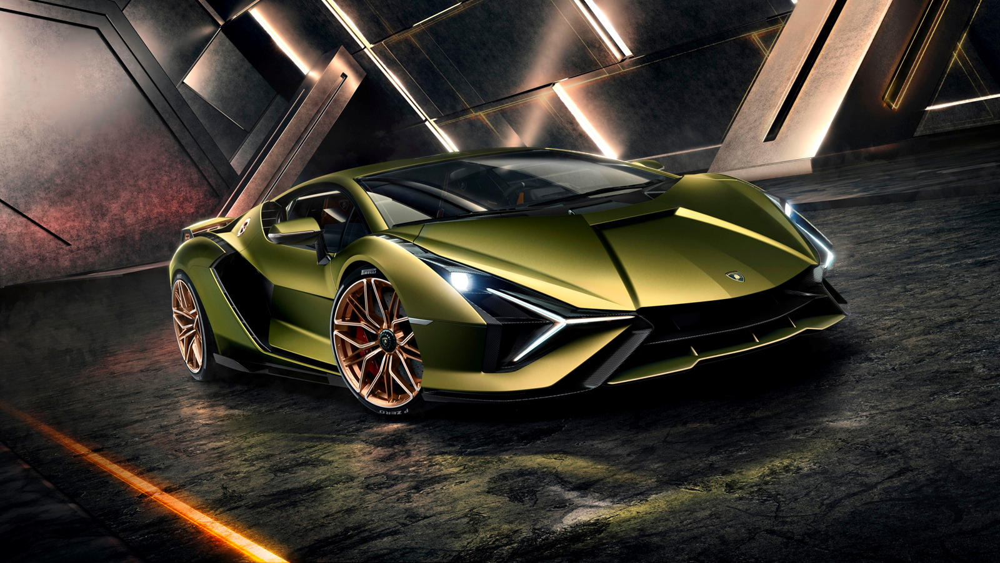

I am
Devaansh Bahrani
I like dogs, playing guitar, cars, hornbills, playing need for speed, and engineering. My favourite subjects are maths, science, D&E, and computer scinece. I like these subjects as they are challenging and fun at the same time. I play guitar, I am currently in Grade 3 of guitar. I love to play video games, go cyling, play board games as well as bowling and go-karting. I really like playing need for speed (not my one üòÅ ) I also like to bird watch at my window. I like listening to multiple genres of music such as rock, pop. My favourite artists are AC/DC, Shawn mendes, Bruno Mars, and Micheal Jackson.
MY FAVORITE FOOD
I like mutton/chicken Biriyani Biriyani
Biriyani is a delicious and versatile dish that can be made with a variety of meats, vegetables, or even just rice. It is a staple dish in many South Asian countries, and is often served at special occasions. Biriyani is typically made with basmati rice, which is a long-grain rice that is known for its nutty flavor. The rice is cooked in a flavorful broth that is made with spices, such as turmeric, coriander, cumin, and cardamom. The meat or vegetables are then added to the rice and cooked until they are tender. Biriyani can be made with a variety of meats, including chicken, mutton, beef, lamb, and fish. It can also be made with vegetables, such as potatoes, carrots, peas, and cauliflower. Biriyani is a very flavorful and filling dish. It is often served with raita, which is a yogurt-based condiment. It can also be served with chutneys, such as mint chutney or tamarind chutney.

I like phad thai
Pad Thai is a stir-fried rice noodle dish that is a national dish of Thailand. It is made with rice noodles, eggs, shrimp, tofu, bean sprouts, and a sweet and savory sauce. The dish is typically garnished with peanuts, lime wedges, and chopped chili peppers. The word "pad" means "fried" and "thai" means "of Thailand." Pad Thai is believed to have originated in the early 20th century, when it was created as a way to use up leftover rice noodles. The dish quickly became popular, and it is now one of the most well-known Thai dishes in the world. Pad Thai is a delicious and easy-to-make dish that is perfect for a quick and satisfying meal. It is also a very versatile dish, and it can be customized to your liking. For example, you can add different types of meat or seafood, or you can add different vegetables. You can also adjust the amount of sweetness and spiciness to your taste. Pad Thai is a popular street food in Thailand, and it can also be found in many Thai restaurants around the world. It is a great dish to try if you are looking for a delicious and authentic Thai meal.

I like carbonara pasta
Carbonara is a classic Italian pasta dish that is made with spaghetti, eggs, Parmesan cheese, and guanciale (cured pork jowl). It is a simple dish, but it is incredibly flavorful and satisfying. The origins of carbonara are a bit murky, but it is thought to have originated in Rome in the early 20th century. The dish was originally made with guanciale, but it is now more commonly made with pancetta or bacon. The eggs and cheese are added to the pasta just before it is served, and the dish is tossed until it is creamy and delicious. Carbonara is a very versatile dish, and it can be customized to your liking. For example, you can add different types of meat or seafood, or you can add different vegetables. You can also adjust the amount of salt and pepper to your taste. Carbonara is a popular dish in Italy, and it can also be found in many Italian restaurants around the world. It is a great dish to try if you are looking for a delicious and authentic Italian meal.

MY FAVOURTIE DOGS
I like shibas
Shibas are cute!!!
An ancient Japanese breed, the Shiba Inu is a little but well-muscled dog once employed as a hunter. Today, the spirited, good-natured Shiba is the most popular companion dog in Japan. The adaptable Shiba is at home in town or country. Brought to America from Japan as recently as 60 years ago, Shibas are growing in popularity in the West and are already the most popular breed in their homeland. Their white markings combined with their coloring (red, red sesame, or black and tan) and their alert expression and smooth stride makes them almost foxlike. They're sturdy, muscular dogs with a bold, confident personality to match.
I like tibeaten mastiffs
Watchful, aloof, imposing, and intimidating: The ancient Tibetan Mastiff is the guardian dog supreme. These densely coated giants are mellow and calm around the house, sweetly devoted to family, and aloof and territorial with strangers. Coming face to face with this ancient behemoth, an intruder up to no good will likely move on to easier pickings. TMs can stand 26 inches at the shoulder and weigh well over 100 pounds. It's impossible to discuss this breed without leaning on words like 'powerful,' 'muscular,' massive,' and 'substantial.' And yet, TMs are quite light-footed and will meet a perceived threat with surprising agility. The broad head, with its high-set, V-shaped ears and expressive brown eyes, projects a noble, sagacious expression.

I like nova scotia duck tolling retrievers
The smallest of the AKC's retrievers, the Nova Scotia Duck Tolling Retriever is intelligent, affectionate, and eager to please. Play fetch with a tireless Toller until your right arm falls off, and he will ask you to throw left-handed. The little gundog with the big name is the smallest AKC retriever, standing ideally 18 or 19 inches at the shoulder. The Toller's trademark is a coat of stunning crimson, ranging from golden red to a dark coppery color, with white markings. Strong and agile, Tollers are medium dogs: medium in size, bone, and coat length. The almond-shaped eyes project an alert expression. Tollers are upbeat athletes who require outlets for their boundless vigor: hunting, hiking, camping, and, of course, swimming (for which they are ideally suited, down to their webbed feet). Tollers are smart, handsome, affectionate companions, but these red tornadoes can be recommended only to those with enough time and energy to keep them usefully occupied.
MY FAVOURITE GAMES
nfs heat
trackmania
Minecraft Java
NFS Unbound
BeamNG Drive
MY FAVOURITE ARTISTS
I like the Black Eyed Peas
Black Eyed Peas is an American musical group consisting of rappers will.i.am, apl.de.ap and Taboo. The group's lineup during the height of their popularity in the 2000s featured Fergie, who replaced Kim Hill in 2002. Originally an alternative hip hop group, they subsequently refashioned themselves as a more marketable pop-rap act. Although the group was founded in Los Angeles in 1995, it was not until the release of their third album Elephunk in 2003 that they achieved high record sales.
I like Green Day
Green Day is an American rock band formed in the East Bay of California in 1987 by lead vocalist and guitarist Billie Joe Armstrong, together with bassist and backing vocalist Mike Dirnt. For most of the band's career, they have been a power trio with drummer Tré Cool, who replaced John Kiffmeyer in 1990 before the recording of the band's second studio album, Kerplunk (1991). Touring guitarist Jason White became a full-time member in 2012, but returned to his touring role in 2016. Before taking its current name in 1989, Green Day was called Sweet Children, and they were part of the late 1980s/early 1990s Bay Area punk scene that emerged from the 924 Gilman Street club in Berkeley, California. The band's early releases were with the independent record label Lookout! Records. In 1994, their major-label debut Dookie, released through Reprise Records, became a breakout success and eventually shipped over 10 million copies in the U.S. Alongside fellow California punk bands Bad Religion, the Offspring, Rancid, NOFX, Pennywise and Social Distortion, Green Day is credited with popularizing mainstream interest in punk rock in the U.S.
I like Micheal Jackson
Michael Joseph Jackson (August 29, 1958 – June 25, 2009) was an American singer, songwriter, dancer, and philanthropist. Known as the "King of Pop", he is regarded as one of the most significant cultural figures of the 20th century. During his four-decade career, his contributions to music, dance, and fashion, along with his publicized personal life, made him a global figure in popular culture. Jackson influenced artists across many music genres; through stage and video performances, he popularized complicated dance moves such as the moonwalk, to which he gave the name, as well as the robot.

MY FAVOURITE CARS
I like Lamborghini Sian
The Lamborghini Sian is a limited-edition hybrid sports car that was first unveiled in 2019. The name "Sian" means "lightning" in Bolognese, and the car is powered by a 6.5-liter V12 engine that is paired with a 48-volt hybrid system. The hybrid system uses a supercapacitor to store energy, which is then used to provide an electric boost to the V12 engine. This gives the Sian a total system output of 819 horsepower. The Sian is capable of accelerating from 0 to 60 mph in 2.8 seconds and has a top speed of over 220 mph. It is also the first Lamborghini to feature a scissor-door design. Only 63 examples of the Sian were produced, and all of them were sold out before the car was even unveiled. The starting price for the Sian was $3.7 million. The Lamborghini Sian is a truly unique and special car. It is a combination of traditional Lamborghini design and cutting-edge hybrid technology. It is sure to be a collector's item for years to come. Here are some of the key features of the Lamborghini Sian: 6.5-liter V12 engine 48-volt hybrid system with supercapacitor 819 horsepower 0-60 mph in 2.8 seconds Top speed over 220 mph Scissor-door design Limited production of 63 units Starting price of $3.7 million The Sian is a true masterpiece of automotive engineering and design. It is a car that will be talked about for years to come.
I like Nissan GTR 5
The Nissan GT-R R35 is a sports car produced by Nissan. It was introduced in 2007 and is the successor to the Nissan Skyline GT-R. The car has a twin-turbocharged 3.8-liter V6 engine that produces 565 horsepower and 467 lb-ft of torque1. The car has a top speed of 196 mph and can go from 0-60 mph in just 2.7 seconds.

I like Buggati Divo
The Bugatti Divo is a mid-engine track-focused sports car developed and manufactured by Bugatti Automobiles S.A.S. The car is named after French racing driver Albert Divo, who raced for Bugatti in the 1920s winning the Targa Florio race twice1. The car is exceptionally crafted, striking in character, strictly limited and with completely different driving dynamics. It is Bugatti’s first modern coachbuilt project: athletic, sharp, with distinctive handling properties, stunning lateral acceleration and a unique design language2. The Divo is powered by Bugatti’s iconic 8.0-liter W16 engine –with an output of 1,500 PS and 1,600 Nm– the Divo combines incomparable coachbuilding quality with an exhilarant driving experience. The Divo is a $5.8M Hypercar Based on the Chiron.

I ford F-150
The Ford F-150 is a series of light-duty trucks marketed and manufactured by Ford since the 1948 model year. The F-Series was sold in eight different weight ratings, with pickup, panel truck, cab-over engine (COE), conventional truck, and school-bus chassis body styles1. The F-150 has a long legacy of full-size Ford rigs that includes: F-1, the truck that launched the F-Series in 1948; F-100, “Power King” of the 1950s; heavy-duty F-250 (1965) and more.
I like the Konisegg Jesko
The Koenigsegg Jesko is a limited-edition hypercar that was introduced in 2019. It is powered by a 5.0-liter twin-turbocharged V8 engine that produces 1,600 horsepower and 1,100 pound-feet of torque. The Jesko can accelerate from 0 to 60 mph in 2.6 seconds and has a top speed of 330 mph. The Jesko features a number of advanced technologies, including active aerodynamics, a carbon fiber monocoque chassis, and a lightweight body. The car also has a number of comfort and convenience features, such as a leather interior, a panoramic sunroof, and a sound system. The Jesko is one of the fastest and most technologically advanced cars in the world. It is a limited-edition car, so only a few hundred will ever be built. The Jesko starts at $2.8 million.